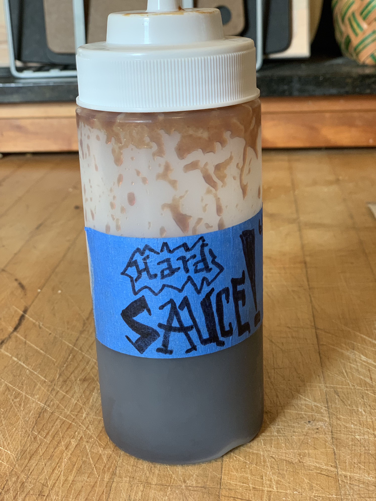

Hard Sauce★ Balsamic Glaze
 36 servings
36 servings 1 hour
1 hour-
 Shawn Rider
Shawn Rider
 Meat
Meat
A sweet and sour balsamic glaze that is awesome on pork chops, fish, and veggies of all kinds.

1 cupbalsamic vinegar2/4 cupketchup1/3 cupbrown sugar1/4 cuphoney1 tbsWorcestershire sauce1/4 tspgarlic powder- salt and pepper
Combine ingredients with a whisk in a pot (at least 4 cups) and bring to a boil.
Simmer for 45 minutes until vinegar loses the backbite.
Let cool then transfer to condiment bottle and keep in the fridge.